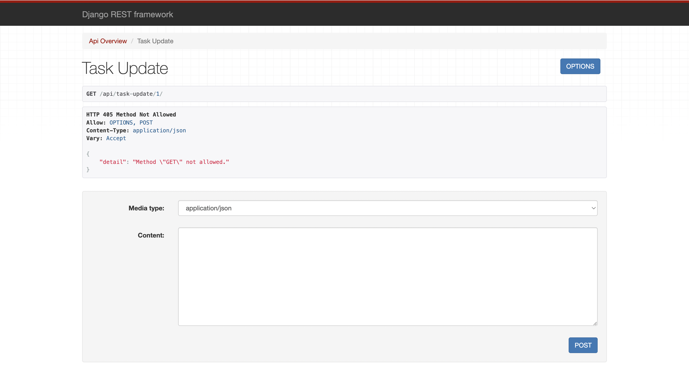

To Do App

This website was built using Django Rest Framework in the backend and JavaScript on the frontend. It uses Create, Update, and Delete functionality.
In this app you can create, update, or delete tasks.
This app serializes data and renders it in JSON format
The repo can be found with this link


JavaScript makes API calls to the Django backend
On the website, you can add, edit, or delete tasks
The repo can be found with this link